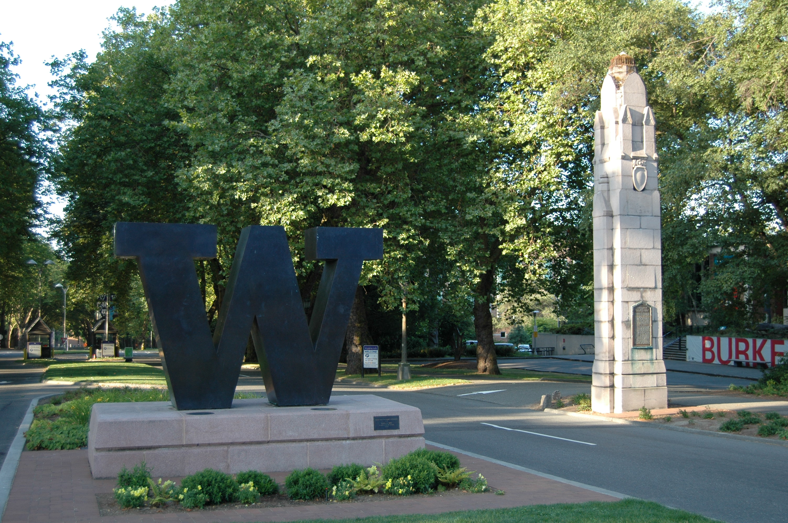

UW-Seattle (informally U-Dub) is one of the world’s preeminent public universities. Ranked #14 worldwide in 2018, the UW educates more than 54,000 students and confers more than 12,000 bachelor’s, master’s, doctoral and professional degrees annually. It turns ideas into impact and transform lives and our world with unshaken optimism. It transforms a diverse student body into responsible global citizens and future leaders through a challenging learning environment informed by cutting-edge scholarship. The university's 22 varsity sports teams are also highly competitive, competing in the Pac-12 Conference of the NCAA Division I and representing the United States at the Olympic Games. The motto of UW is Lux sit , Latin for "Let There Be Light."
Map of UW-Seattle ↑
Here's a photo of a UW-Seattle landmark. The entire campus spans over 700 acres!
Go Huskies!
(the description is paraphrased from the University's "About" website)